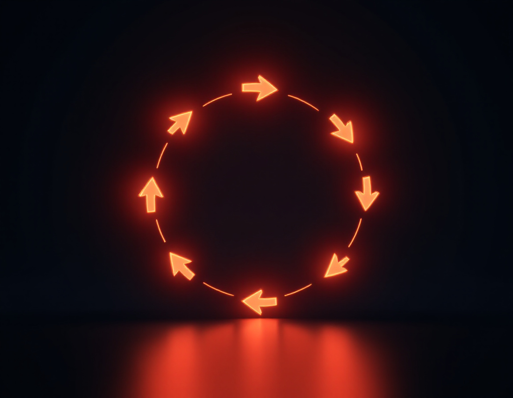
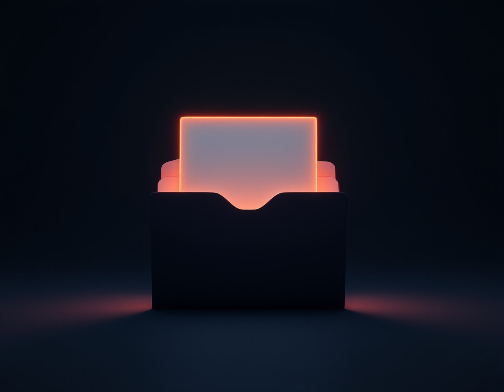

Агенты
и Codex
Помните, на чём мы остановились
Чат
Спросил, получил ответ. Разобрали.
Работа
Ходит по почте и диску, делает многошаговые задачи. Разобрали.
Codex
Работает с файлами на вашем компьютере. Отложили до сегодня.
Что сегодня
Что такое агент
Раньше ИИ отвечал.
Теперь он работает
Чат-ассистент
Даёт текст, идею, объяснение. Живёт внутри окна и не трогает ничего снаружи.
«объясни» · «напиши» · «предложи»
Рабочий агент
Видит ваш проект, сам совершает действия, проверяет, что вышло, и возвращает готовый файл.
разобрал файлы · собрал · проверил
Четыре уровня, и вы уже на третьем
Мозг это одно.
Агент это пять частей
Чат заканчивается.
Файлы остаются
История чата
Работает внутри одного разговора. Закрыли окно, и контекст ушёл. Завтра объясняете заново.
Папка проекта
Правила, решения и результаты лежат в файлах. Вернулись через неделю и продолжили с того же места.
Три формата, и вам нужен первый
Готовые агенты
Codex, Claude Code. Готовый рабочий кабинет: открыл и работаешь обычными словами.
Сюда мы идём сегодня
ИИ-редакторы
Cursor, VS Code. Мастерская, куда подключают модели и расширения. Собирать надо самому.
Через командную строку
Codex CLI, Claude CLI. Мощнее всего и без единой кнопки. Для тех, кто уже привык.
Один экран, много рук
Те же три слова, только теперь с руками
Как выглядит
нормальная работа

Задача
Вопросы
План
Разрешение
Действие
Результат
Проверка
Правка
Чего мы не делаем
Ставим Codex
Пять шагов, и он ваш
Открываем Codex и ставим приложение
Смотрим не на кнопки, а на принцип
Папка это его рабочий стол

Файл, который он читает первым
Папка и правила в ней
Три уровня, которые не путаем

Объясняем ему, кто вы
Первый запрос должен быть безопасным
Расскажи, какие задачи ты можешь брать в этой папке, какие действия потребуют моего подтверждения, и предложи первый безопасный проект для практики. Ничего пока не делай и не создавай файлы.
От пустой папки
до готового файла

Помоги разобрать мою рабочую неделю. Сначала задай уточняющие вопросы, по одному. После моих ответов создай один файл «План недели.md». Другие файлы не меняй, наружу ничего не отправляй.
Что вы унесли сегодня
Два дня, и он станет привычкой
Вторник
Доводите настройку до конца и делаете три файла его руками: по одному на каждый тип задачи из вашей работы
Среда
Заводите вторую папку под реальную задачу и проходите весь цикл: вопросы, план, разрешение, результат, проверка